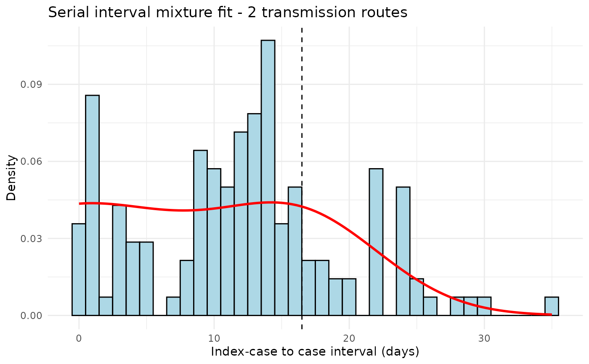
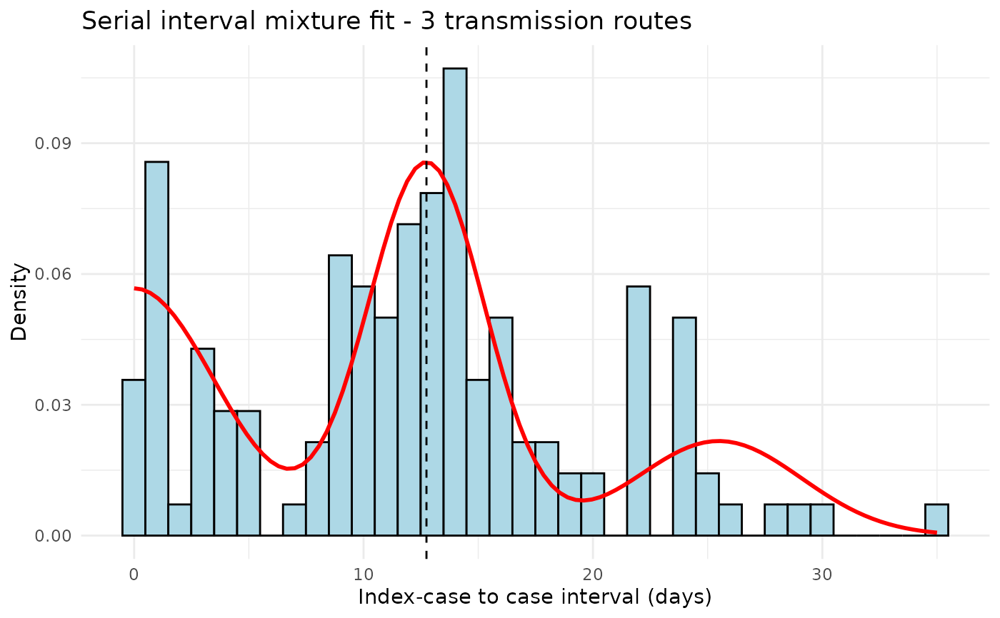
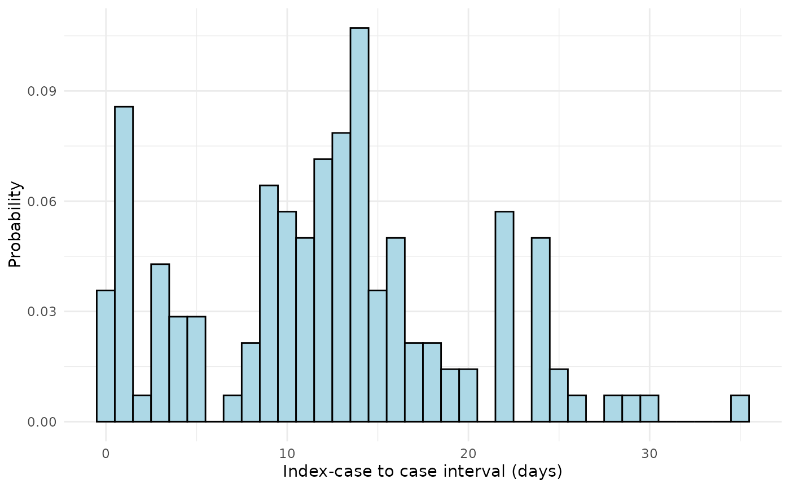

Compare Serial Interval Models Across Different Numbers of Transmission Routes
Source:R/compare_n_routes.R
compare_n_routes.RdFits the serial interval mixture model for each number of transmission routes
from 2 up to n_routes_max, computes model selection criteria (AIC and BIC)
for each fit, and prints a summary table to help identify the optimal number
of routes.
Arguments
- dat
numeric vector; index case-to-case (ICC) intervals in days.
- n_routes_max
integer; maximum number of transmission routes to evaluate. Models are fitted for
n_routesfrom 2 ton_routes_max. Defaults to8L.- dist
character; assumed parametric family for the serial interval distribution. Must be either
"normal"(default) or"gamma".- n
integer; number of EM algorithm iterations passed to
si_estim. Defaults to 50.- ...
additional arguments passed to
si_estim.
Value
A data frame (returned invisibly) with one row per value of
n_routes and the following columns:
- n_routes
Number of transmission routes fitted.
- mu
Estimated mean of the serial interval (days).
- sigma
Estimated standard deviation of the serial interval (days).
- loglik
Log-likelihood of the fitted model.
- aic
Akaike Information Criterion.
- bic
Bayesian Information Criterion.
- n_params
Number of free parameters in the model.
- converged
Logical; whether the EM algorithm converged.
- iterations
Number of EM iterations performed.
A summary table and the best n_routes according to BIC and AIC are
printed as side effects.
Details
For each value of n_routes in 2:n_routes_max, the function:
Calls
si_estimto fit the mixture model and retrieve the log-likelihood and estimated weights.Counts the number of free parameters \(p\):
Normal distribution: \(p = 2 + (2 \times n\_routes - 2)\)
Gamma distribution: \(p = 2 + (n\_routes - 1)\)
Computes AIC and BIC: $$AIC = -2 \ell + 2p$$ $$BIC = -2 \ell + p \log(n)$$
Prints the fitted mixture plot via
plot_si_fit_result.
The model with the lowest BIC (or AIC) is reported as the best-fitting number of routes.
Examples
# \donttest{
set.seed(42)
icc_data <- c(
abs(rnorm(30, mean = 0, sd = 2)),
rnorm(80, mean = 12, sd = 3),
rnorm(30, mean = 24, sd = 4)
)
icc_data <- round(pmax(icc_data, 0))
# Compare 2 to 6 routes with normal distribution
results <- compare_n_routes(icc_data, n_routes_max = 6, dist = "normal", n = 50)


#> === Comparison of the n_routes ===
#> n_routes mu sigma loglik aic bic n_params converged iterations
#> 1 2 16.50 6.051 -468.1 944.2 955.9 4 TRUE 16
#> 2 3 12.74 2.552 -455.2 922.3 940.0 6 TRUE 18
#> 3 4 12.74 2.552 -455.8 927.6 951.1 8 TRUE 17
#> 4 5 12.74 2.552 -455.8 931.6 961.0 10 TRUE 17
#> 5 6 12.74 2.552 -455.8 935.6 970.9 12 TRUE 17
#>
#> Best n_routes according to BIC : 3
#> Best n_routes according to AIC : 3
# Compare using gamma distribution
results_gam <- compare_n_routes(icc_data, n_routes_max = 5, dist = "gamma", n = 50)
#> Warning: Computation failed in `stat_function()`.
#> Caused by error in `fun()`:
#> ! unused argument (n_routes = 2)
 #> Warning: Computation failed in `stat_function()`.
#> Caused by error in `fun()`:
#> ! unused argument (n_routes = 3)
#> Warning: Computation failed in `stat_function()`.
#> Caused by error in `fun()`:
#> ! unused argument (n_routes = 3)
 #> Warning: Computation failed in `stat_function()`.
#> Caused by error in `fun()`:
#> ! unused argument (n_routes = 4)
#> Warning: Computation failed in `stat_function()`.
#> Caused by error in `fun()`:
#> ! unused argument (n_routes = 4)
 #> Warning: Computation failed in `stat_function()`.
#> Caused by error in `fun()`:
#> ! unused argument (n_routes = 5)
#> Warning: Computation failed in `stat_function()`.
#> Caused by error in `fun()`:
#> ! unused argument (n_routes = 5)

#> === Comparison of the n_routes ===
#> n_routes mu sigma loglik aic bic n_params converged iterations
#> 1 2 16.50 5.458 -463.2 932.4 941.2 3 TRUE 13
#> 2 3 12.88 2.622 -454.0 916.0 927.8 4 TRUE 26
#> 3 4 12.88 2.622 -454.8 919.5 934.2 5 TRUE 24
#> 4 5 12.88 2.622 -454.8 921.5 939.2 6 TRUE 25
#>
#> Best n_routes according to BIC : 3
#> Best n_routes according to AIC : 3
# }